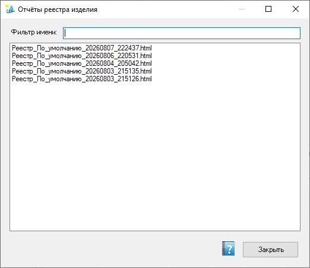

Отчёты реестра изделия
Список ранее сформированных HTML-отчётов по составу изделия: открытие в браузере, удаление, фильтрация по имени файла. Включает отчёт «Состав сборки» — дерево компонентов с обозначениями, наименованиями и количеством.
Как открыть
Из реестра изделия — кнопка Отчёты (список). Новый отчёт создаётся кнопкой Отчёт в основном окне реестра: в HTML попадает текущий вид таблицы (шаблон столбцов, фильтры, группировка).
Отчёт «Состав сборки»
Открывается кнопкой Состав в строке кнопок реестра (справа). Формирует отчёт в виде дерева: корневая сборка → прямые дочерние компоненты (сборки и детали) → вложенные сборки рекурсивно.
| Столбец | Описание |
|---|---|
| Обозначение | Обозначение компонента (файл, позиция). |
| Наименование | Наименование компонента из свойств документа. |
| Кол-во | Количество вхождений в сборке. |
Корневая сборка всегда отображается в отчёте, даже если она состоит только из деталей (без вложенных сборок). Отображение идёт с использованием актуальной (текущей) конфигурации.

Список сохранённых HTML-отчётов с фильтром по имени файла. Открыть — контекстное меню или двойной щелчок.
Работа со списком
- Фильтр по имени файла отчёта (синтаксис — маски фильтров).
- Контекстное меню: Открыть, Удалить, Выбрать все.
- Двойной щелчок обычно открывает отчёт.
Где хранятся файлы
Отчёты сохраняются в каталог отчётов сценариев, заданный в настройках проекта (по умолчанию под %ProgramData%\VELUM). Вид HTML зависит от шаблона столбцов — см. настройки столбцов.